Operator playbook
Tips & tricks
Practical strategies, backed by the game's actual numbers. The tags show when each tip matters most:
Early Mid Late Prestige
Never sell raw if you can refine
Early
Refining almost always multiplies value. 3 Training Data ($4.50) become 1 NLP Data ($12.50), a ×2.8 gain. 30 Training Data become 1 Vision Data ($375), ×8.3. The deeper chains reach ×90 and more. Each node card shows its Sell value added.
Balance your ratios
Early
A node only runs full sets. At base rates, one NLP Preprocessor needs 3 Training Data/s, so three Crawlers. A Vision Encoder (capacity 2, 30 per set) needs 60/s. Starving a node wastes its capacity, and overfeeding it wastes the input. Match input demand × capacity to what your suppliers produce.
Spam the cheap early upgrades
Early
Data Stream, Training Crawler and Power upgrades grow only ×1.07 per level. Everything else grows ×1.13. Each level adds a full 1× base rate, so level 10 means 10× output, and the Crawler gets an extra ×1.25 every 100 levels. Keep those three topped up with the ×10 buy mode.
Buy Auto Collect early
Early
Money sitting in a Collector can't be spent. Auto Collect ($5M, one-time) banks every coin the moment it arrives, so you can keep buying upgrades without clicking.
Use Split to set priorities
Mid
When one output feeds several nodes, it's shared by demand, and Markets and Researchers only get an average share. If you want exactly 25% going to your Researcher, put a Split in front and set the slider. Chain Splits for three-way or four-way divisions.
 Build modules, then duplicate
Build modules, then duplicate
Mid
Design one balanced production block, select it, Ctrl+G to group it, then Ctrl+D to duplicate it when you have free slots. Groups keep huge factories readable and easy to move.
Signal Booster is a Data Stream multiplier
Mid
At capacity 5, one Booster turns 100 Data Stream + 50 Energy per second into 200 Data Stream, a net +100/s from a single node. You can only own one, so feed it fully: that takes 5 Power nodes at base rate.
CPU is for GPUs, not for selling
Mid
A Compute Unit makes 100 heat for just $95/s of CPU Process, the worst heat-to-value ratio in the game. Feed it into GPUs (capacity 3, ×5 output) and Tensor units (capacity 6, ×5 output), or use it as Process (any) for Tokenizers.
Chase the top-tier products
Late
Each tier sells for roughly 10–100× the previous one. One Predictive Trading Bot at base rate earns $2.5T/s, and the Generative Art Studio turns ~$3.75M of Vision Data into a $57.5B token. Once a new tier is reachable, redirect resources to it and sell the leftovers.
Sell Rate upgrades are cheap multipliers
Mid
Each resource's sell price can go up to 6× with 5 upgrades at ×1.5 cost growth. For whatever you sell most, that's a 6× income boost that costs little compared with building 5 more production lines.
Know your heat budget
Mid
The factory settles at 24 + total heat ÷ 10 °C. Stay under 60 °C (total heat ≤ 360) for full speed, or 100 °C (≤ 760) for ×0.9. Past 100 °C you lose 30%, and past 500 °C you lose 80%. Use the heat calculator.
Use zero-heat nodes
Mid
Vision Encoder, Acoustic Model and Frame Sequencer make 0 heat. Auto Labeling Farm (5) and Privacy Shield Bot (3) are nearly free too. Build them freely, and spend your heat budget on the hot ones: Enterprise Chatbot 150, Chatbot 120, Tensor 110.
Level fans, don't just build them
Mid
A level-1 fan only gives −4 heat. Cooling scales with level and gets ×1.5 every 20 levels: level 20 gives −120, and level 40 gives −360 per fan. Past 0 °C you get bonus speed (×1.2), and near absolute zero up to ×4.
Bugs are free money
Early
Every bug you click pays about 10 seconds of income, but each one halves a node's output and adds 100 heat. Click them while you're active. For idle play, place an Antimalware Cannon in the middle of your densest area and upgrade its range.
Markets ignore heat
Mid
Heat and bugs only slow down production nodes. Markets always sell at full price, so a hot factory loses output but never loses sale value.
Roll cheap Matrix items often
Early
A Matrix bonus is centered on the number of rolls: after 50 rolls expect about +50%. Early items are cheap (the Training Data item unlocks for $225), so roll them a lot. Remember the bonus only applies while the item is placed, so prioritize grid space for your bottleneck nodes.
Shrink shapes with Research
Mid
Reshaping tends toward smaller pieces as its level rises, reaching 1–2 cell shapes after 15 levels. Small shapes let you fit many more bonuses on the 5×8 grid. Use rotate (R) and flip (F) to pack them tightly.
Keep a Researcher always fed
Early
Research buys node slots, and slots are the real limit on growth. Each model level gives ×1.5 Research, and level 8 unlocks the next model with a 20–40× bigger base. Keep a steady share of every required resource flowing into a Researcher.
Models survive prestige
Prestige
Model levels and the research stock are kept when you go public. Before prestiging, dump everything you can into your Researchers and level models, because that progress carries into the next run.
Prestige early, then when chips grow 50–100%
Prestige
Your first prestige at $1B lifetime gives 150 chips, which doubles production. After that, chips grow slowly (twice the money gives only ×1.35 chips), so reset when the new chips would add about 50–100% to what you own. Try the prestige planner.

Upgrade Offline Time before breaks
Mid
Offline earnings stop at your Offline Time cap: 20 minutes at the start, +20 per level. If you're going to sleep, a few levels (and the Offline Time Matrix item) turn eight hours away into real progress.
Don't exchange chips casually
Prestige
Exchanging an AI Chip gives $100,000, but every chip you spend lowers your permanent bonus by 0.67%. It only pays off very early in a run, when $100K really matters.